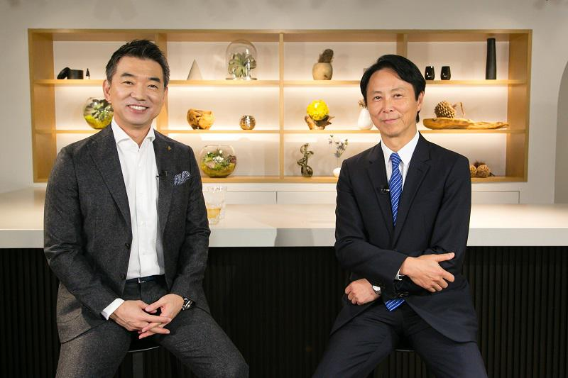

【対談】小林弘幸×橋下徹 自律神経研究の第一人者であり、腸のスペシャリストでもある小林弘幸順天堂大学医学部教授。普段の生活で高いパフォーマンスを出すには、何に気をつければいいのか。
ゲスト
小林弘幸 Hiroyuki Kobayashi
順天堂大学医学部教授。日本体育協会公認スポーツドクター。１９６０年、埼玉県生まれ。自律神経研究の第一人者として、トップアスリートや文化人のコンディショニング、パフォーマンス向上の指導にあたっている。また、日本で初めて便秘外来を開設した腸のスペシャリスト。
★自律神経研究の第一人者であり、腸のスペシャリストでもある小林弘幸順天堂大学医学部教授。普段の生活で高いパフォーマンスを出すには、何に気をつければいいのか。トップアスリートを例に、わかりやすく解説してもらった。 １割の副交感神経優位の人は「緊張している」ほうがパフォーマンスが上がるという。 プロゴルファーの石川遼はその典型例だという。

■ボールが止まって見える メカニズム
橋下徹（以下、橋下）
小林さんは自律神経の専門家として知られ、「腸活」というネーミングをされた腸のスペシャリストとしても有名です。そもそも自律神経に注目されたのはなぜですか？
小林弘幸（以下、小林）
中学まで野球をやっていて、ある大会でサヨナラヒットを打ったんです。そのとき、「ピッチャーのボールが止まって見えた」んですよ。
橋下
川上哲治さんみたいですね。
小林
そう、本当に止まって見えて「これはなんだ」と思いました。高校のときはラグビーをやっていたのですが、初めてトライを決めたときも、走っていたら目の前が開け、敵の動きが止まって見えました。後に、どうやらスポーツ選手がすごいパフォーマンスを発揮するときは、同じような感覚を覚えるらしいと知りました。それでたまたま医者になってから、「小腸の移植」が専門になったんです。
橋下
小腸とスポーツにも関係が？
小林
はい、小腸の移植は難しくて、手術に成功してもうまく神経が再生しなくて、機能しないことが多い。人はストレスを受けると下痢しますよね。つまり腸は、人間の自律神経や免疫系の働きに、密接な関係がある器官なんです。それで自律神経を研究するようになり、スポーツとの関連を調べるようになりました。
橋下
自律神経が興奮すると、運動パフォーマンスが高まるんですか。
小林
興奮というより「最高の状態で安定」すると、ボールが止まって見えるような現象が起こります。 時速３００キロで走るＦ１のレーサーは、自律神経の状態がいいとコーナーが広く、ゆっくり近づいて見えるそうです。逆に自律神経が乱れるとコーナーが狭く見えて、恐怖で何度もブレーキを踏んでしまうんです。
橋下
何となく興奮するほうが調子が上がりそうですが、逆なんですね。自律神経は意思でコントロールできるんですか？
小林
脳から体につながる神経には２種類、「体性神経」と「自律神経」があります。手や足の筋肉を意識的に動かすときに使われるのが体性神経で、われわれが寝ているときでも臓器を動かしたり、血流を促しているのが自律神経の役割です。自律神経は名前の通り、意思で操作できないと思われていたんですが、これが「呼吸」によってコントロールできることが最近わかってきました。ヨガとか太極拳は呼吸を重視しますし、野球でもピッチャーは投げる前に「フーッ」と息を吐きます。あれは無意識に自律神経を整えているんですね。
橋下
深呼吸が大切なんですね。
小林
息を吸うことよりも、吐くほうが大切です。割合で言うと１対２、「３秒吸ったら６秒吐く」呼吸をすると、自律神経が一番安定することがわかっています。
橋下
ふだんの生活から呼吸を意識するといいんでしょうか。
小林
ただ、呼吸は意識するのが難しいんですよ。人間が生きるためには「食事」と「呼吸」が必須です。食事はみんな美味しいものを食べたいから興味を持ちますが、「呼吸はタダ」だから、意識できないんです。これが「ひと呼吸１５０円です」と言われたら違うんでしょうけどね。
橋下
大きな仕事を前に緊張してしまったときなども、呼吸で対処できるんですか？
小林
自律神経には車のアクセルにあたる「交感神経」と、ブレーキにあたる「副交感神経」があります。緊張しているときはアクセル全開で、交感神経が興奮しているんです。そんなときは、低下している副交感神経を上げるといい。
橋下
どうやって上げるんですか？
小林
呼吸とともに、日頃から腸内環境を整えておくと、副交感神経が下がりにくくなります。また、有効な手段に「タッピング」があります。お母さんが赤ちゃんを抱いているとき、軽くトントンと背中や腕を手で触りますよね。あれがタッピングです。プレゼン前などに少しだけ触れるぐらいの力で、リズミカルに自分の手をタッピングすると、緊張がほぐれます。
橋下
では、貧乏ゆすりはどうでしょうか。政治家やコメンテーターと激論を戦わせているとき、たまに相手が貧乏ゆすりをしていることがあって「落ち着きがないな」と感じてたんですが。
小林
貧乏ゆすりもタッピングと同様、ストレスを逃がすための行為です。よく大リーガーがガムを噛んでますが、あれも同じ効果があります。あと「ため息」にも気持ちを落ち着かせる効果があります。ため息をつく前はストレスがかかっていて、呼吸が浅いんですよ。そのリカバリーのために深く息を吐くんですね。
橋下
アクセル役の交感神経が下がるのもよくないんですか。
小林
よくないです。副交感神経のブレーキだけが利いている状態だと、鬱病や慢性疲労症候群になります。
■会話で わかる緊張のタイプ
橋下
なるほど、交感神経、副交感神経の両方を上げた状態で自律神経を安定させると、先ほど小林さんが言われた「プレー中に場面が止まって見える」状態になるわけですね。
小林
はい。慶應大学のラグビー部に協力してもらって、「プレースキック」の際の選手の自律神経の状態をチェックする研究を行ったところ、明らかに関連が見られました。
橋下
ラグビーのワールドカップで田村優選手が蹴った、トライ後にＨ型のポールに向けて蹴るキックですね。あれは緊張しますからね。
小林
ええ、試合直前にキッカーの自律神経を測り、抜群に状態がよかったら、どの角度から蹴ってもほぼ入ります。面白いのは、生まれつき交感神経優位の人がだいたい９割で、副交感神経優位は１割しかいないんですね。この１割の人は逆に「緊張している」ほうがいいんです。ゴルフの石川遼選手なんかがそうです。橋下さんも副交感神経優位のタイプだと思います。テレビの討論などを見ても、橋下さんが緊張感を持って、攻めた会話をしているときに生き生きしているのがわかります。
橋下
攻めた政治をやったらえらい批判されましたけどね（笑）。でも言われてみて、「確かに普段は緊張してないな」と腑に落ちました。家では本当に緊張感なく、ぐだーっとしてます。政治家の場合は、「批判されても批判と感じない」ことが重要なんですよ。
小林
テレビを見ていると、「この人は交感神経と副交感神経のどっちが優位だな」というのはすぐわかりますね。
橋下
何でわかるんですか？
小林
会話の答え方でわかります。副交感神経が優位な人は、自分のペースでゆっくり話します。相手から想定外の質問が来たときに、すぐ食いついて変なことを喋っちゃうのが交感神経優位の人ですね。
橋下
あれ？ 僕、食いついていきますけどね（笑）。
小林
橋下さんの場合、相手に食いついているように見えて、全部自分のペースで会話を進めているんですよ。２つのタイプは生まれつきなので、「互いを真似したら失敗する」んです。交感神経優位の人が「橋下さんみたいに振る舞おう」と真似しても、必ず大失敗します。
橋下
なるほど、面白いですね。
小林
自律神経の怖いのは、周りの人に「伝染する」んです。自律神経の調子が悪い人の近くにいると、みんな調子が悪くなっていきます。野球でよく「奇跡の大逆転」と呼ばれる試合がありますが、あれも奇跡じゃない。誰かが守備でファインプレーをしたことで選手たちの自律神経が高いバランスでまとまり、その状態で攻撃に移るからヒットが出る。逆に追われる側は、自律神経がみんな悪くなって守りにつくから、エラーが増えていく。
橋下
小林さんは講演や医師会でよく関西に来られると思いますが、東京との違いについて感じることはありますか？
小林
東京と関西は劇的に違いますよね。僕はよく「大阪マインド」と言うんですが、講演で話す人に対して聴衆が「みんなで盛り上げてやろう」という気持ちがあるんですよ。リアクションがまったく違います。「いや、ここでそんなにリアクションしてくれなくても」と感じることもしょっちゅうです。
橋下
わかります（笑）。
小林
あれは何がいいかって、講演者も聴衆も、その場にいる全員の気持ちがよくなりますよね。そうそう、健康に関する研究で今、注目されている物質に「オキシトシン」というホルモンがあります。これが多いと、体の調子もよくなるし、幸福を感じるようにもなるんです。
橋下
どういう物質なんですか？
小林
脳の視床下部から出る物質で、出産時の子宮の収縮に関係しているんですが、最近、いじめとか虐待をしてしまう人は、オキシトシンが恒常的に不足していることがわかったんです。オキシトシンは、みんなで食事を楽しんだり、仲間と笑ったりすると出ます。愛情ホルモンといわれていて「一日に８回ハグをするとすごく増える」という実験結果もあるんです。それで言うと大阪の人は、東京に比べてオキシトシンが出ている量が多い気がしますね。
橋下
それは同感ですね（笑）。今日は交感神経と副交感神経について、何となくの知識は持ってましたが、「両方をバランスよく安定させることが大切」ということを初めて教えてもらいました。僕が副交感神経優位のタイプというのには驚きましたが、「もうちょっと緊張したほうがいい」というのは納得です（笑）。小林さんのアドバイスを活かして、これから自律神経を整えていきたいと思います。
※「みんなのJAPAN MOVE」を再構成（プレジデント社 PRESIDENTより抜粋）
▼【公式メールマガジン＆公式オンラインサロン 】へのご入会はこちらから！